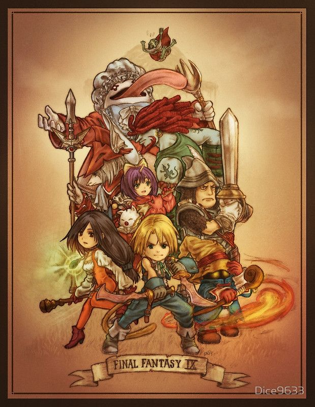

Final Fantasy IX Fan-Site
Final Fantasy IX es el último juego de la famosa saga hecho para PSx. La historia de este clásico RPG inicia cuando Yitán, nuestro protagonista, se infiltra en el castillo de Alexandria para secuestrar a la princesa, hasta que fue sorprendido por una extraña petición "Por favor, ¡secuestrame!". A travez del viaje que nos presentan los personajes de esta historia, nos enseñara sobre el crecimiento, el amor, la lealtad y el valor de la vida.